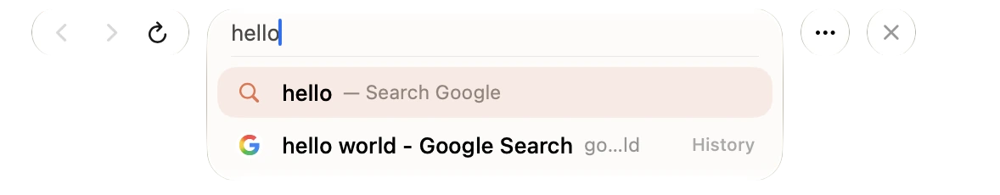

Smart Omnibox
Everything you need, in one place.
One field for addresses and search, with suggestions from your history and bookmarks. Google search by default, online suggestions only if you turn them on, all inside a native Liquid Glass capsule that expands in place.